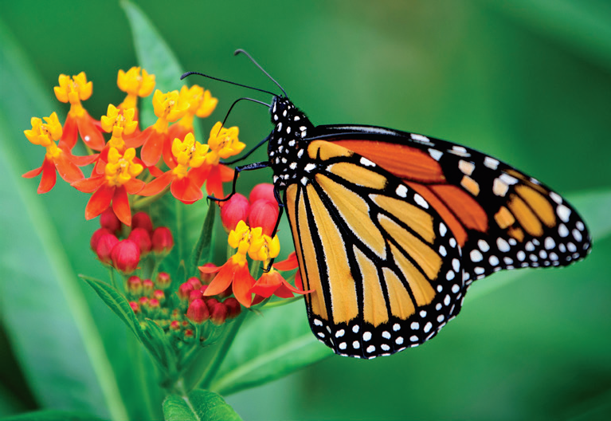

The learner will be able to
Recall various types of reproduction in lower and higher organisms.
Discuss different methods of vegetative reproduction in plants.
Recognise modern methods of reproduction.
Recall the parts of a flower.
Recognise the structure of mature anther.
Describe the structure and types of ovules.
Discuss the structure of embryo sac.
Recognise different types of pollination.
Identify the types of endosperms.
Differentiate the structure of Dicot and Monocot seed.